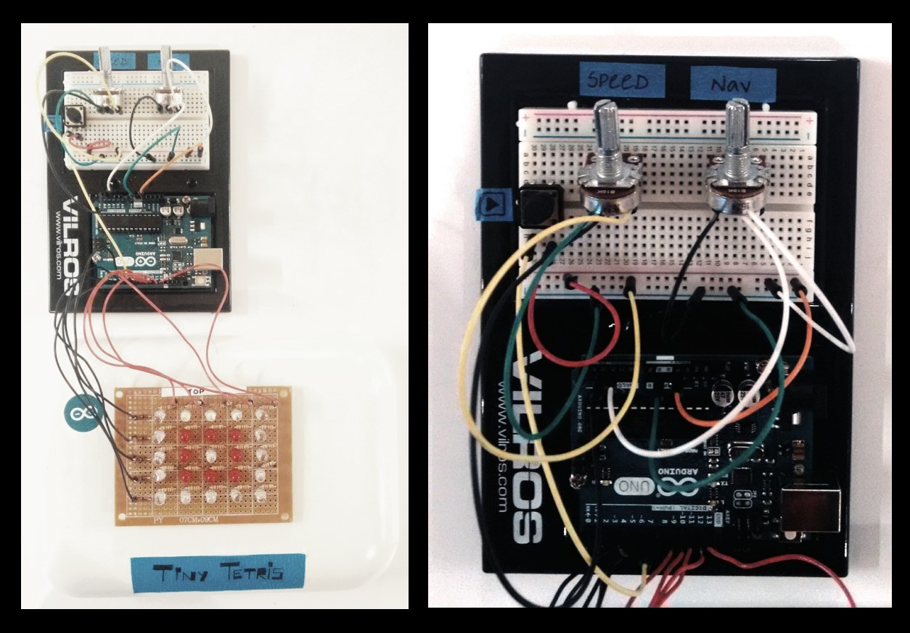

Tiny Tetris
Tools Used : Arduino
A physical version of tetris with lights.
This project was a small experiment to create a small game out of basic analog inputs and LEDs. Here 10 inputs from the was used to control the lighting of the board. On top of that, persistence of vision was used so that if we flicker a series of LEDs continuously at a high frequency, then it would seem like they are lighting up at once. This helped create all the necessary patters while playing the game.
LED Board


← Back to Home